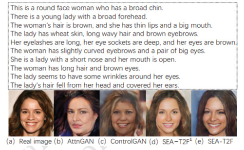
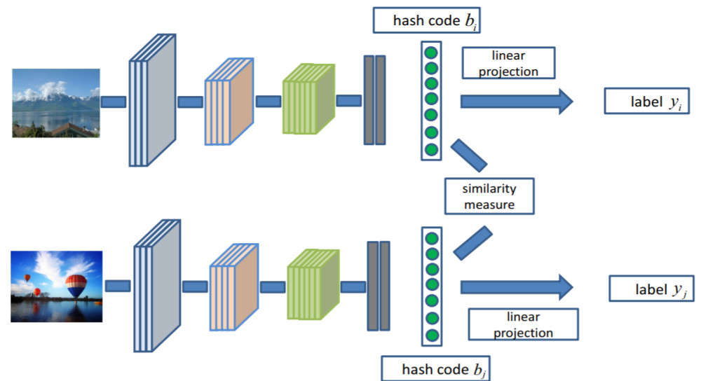
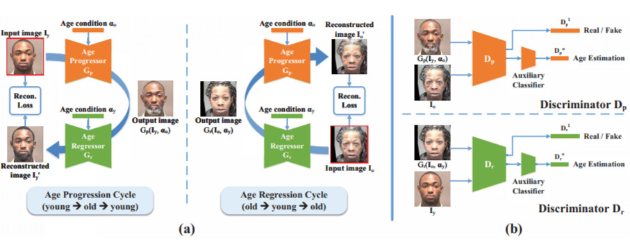

|
Qi Li Associate Professor CRIPAC, NLPR CASIA qli at nlpr.ia.ac.cn [GitHub] [Google Scholar] |
Qi Li received the BSc degree in Automation from China University of Petroleum in 2011, and the PhD degree in Pattern Recognition and Intelligent System from University of Chinese Academy of Sciences (UCAS) in 2016 advised by Prof. Tieniu Tan. Since July 2016, Dr. Qi Li has joined the Center for Research on Intelligent Perception and Computing (CRIPAC), National Laboratoty of Pattern Recognition (NLPR), Institute of Automation, Chinese Academy of Sciences (CASIA) where he is currently an Associate Professor. His group leaders are Prof. Tieniu Tan and Prof. Zhenan Sun. His research interests include computer vision, biometrics, face recognition etc.
News
[Aug 2021] I will serve as a Senior Program Committee Member for AAAI 2022 (meta reviewer).[Aug 2021] Internship Opening: I am looking for some self-motivated candidates who have strong coding skills and English ability. If you are interested in doing research on Computer Vision and Pattern Recognition, please send your CV to me.
[Jul 2021] Two papers are accepted by ACM MM 2021.
[Jun 2021] Four papers are accepted by IJCB 2021.
[May 2021] We are holding DeepFake Game Competition (DFGC) [Here].
[Apr 2021] One paper is accepted by CVPR 2021.
Publications
|  |
Multi-caption Text-to-Face Synthesis: Dataset and Algorithm Jianxin Sun, Qi Li, Weining Wang, Jian Zhao, Zhenan Sun in ACM MM, 2021. |

|
One Shot Face Swapping on Megapixels Yuhao Zhu, Qi Li, Jian Wang, Chengzhong Xu, Zhenan Sun in CVPR, 2021. [Paper] [GitHub] |
|  |
A General Framework for Deep Supervised Discrete Hashing Qi Li, Zhenan Sun, Ran He, Tieniu Tan in IJCV, 2020. [Paper] [GitHub] |
|  |
Age Progression and Regression with Spatial Attention Modules Qi Li*, Yunfan Liu*, Zhenan Sun in AAAI, 2020. [Paper] [GitHub] |
Professional Activities
Committee member of CAAI-PR, CSIG-BVDMember of the board of directors of BSIG
Reviewer for journals: TPAMI, TIP, TMM, PR, etc. Reviewer for conferences: CVPR, NeurIPS, ICML, ECCV, IJCAI, AAAI, etc.
Awards
Young Elite Scientist Sponsorship Program by the Beijing Association for Science and TechnologyStudent Collaborators/Interns
I have gotten to work with some wonderful collaborators.- PhD [co-supervised with Prof. Tan or Prof. Sun] Qiyao Deng, CASIA
- Masters [co-supervised with Prof. Sun] Mingkang Liu, HRBUST
- Undergraduates Yaru Li, BUPT, now @ CMU
- Senior High School Students Haile Lei, RDFZ, now @ University of St Andrews
Yunfan Liu, CASIA
Wei Zhang, CASIA
Jianxin Sun, CASIA
Jincai Xu, UCAS
Lijuan Hu, TJU, now @ Cornell University
Qingyang Wang, RDFZ, now @ Tsinghua University